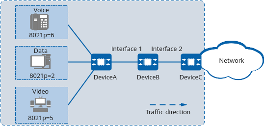

Example for Configuring Traffic Shaping Based on Priority Mapping in a DiffServ Domain
Networking Requirements
In Figure 1, packets of voice, video, and data services from the user side traverse DeviceA, DeviceB, and DeviceC to reach the external network.

In this example, interface 1 and interface 2 represent 10GE 0/0/1 and 10GE 0/0/2, respectively.

Packets of voice, video, and data services are identified by 802.1p priorities 6, 5, and 2, respectively. The interface bandwidth is limited to 10000 kbit/s. However, jitter may occur when packets from interface 2 on DeviceB reach DeviceC. To reduce jitter and ensure the bandwidth for various services, the bandwidth requirements in Table 1 must be met.
Procedure
- On DeviceB, create a VLAN and configure interfaces so that users can access the network through DeviceB.
# Create VLAN 10.
<HUAWEI> system-view [HUAWEI] sysname DeviceB [DeviceB] vlan batch 10
# Add 10GE 0/0/1 and 10GE 0/0/2 to VLAN 10 as trunk interfaces.
[DeviceB] interface 10ge 0/0/1 [DeviceB-10GE0/0/1] portswitch [DeviceB-10GE0/0/1] port link-type trunk [DeviceB-10GE0/0/1] port trunk allow-pass vlan 10 [DeviceB-10GE0/0/1] quit [DeviceB] interface 10ge 0/0/2 [DeviceB-10GE0/0/2] portswitch [DeviceB-10GE0/0/2] port link-type trunk [DeviceB-10GE0/0/2] port trunk allow-pass vlan 10 [DeviceB-10GE0/0/2] quit
- Configure priority mapping.
# Configure 10GE 0/0/1 to trust outer 802.1p priorities, create DiffServ domain ds1, and map 802.1p priorities 6, 5, and 2 to PHBs CS7, EF, and AF2, respectively.
[DeviceB] diffserv domain ds1 [DeviceB-dsdomain-ds1] 8021p-inbound 6 phb cs7 //Map 802.1p priorities of different service packets to different PHBs to ensure that the service packets enter different queues. [DeviceB-dsdomain-ds1] 8021p-inbound 5 phb ef [DeviceB-dsdomain-ds1] 8021p-inbound 2 phb af2 [DeviceB-dsdomain-ds1] quit [DeviceB] interface 10ge 0/0/1 [DeviceB-10GE0/0/1] trust 8021p outer [DeviceB-10GE0/0/1] trust upstream ds1 [DeviceB-10GE0/0/1] quit
- Configure traffic shaping on an interface.
# Configure traffic shaping on an interface of DeviceB to limit the rate of the interface to 10000 kbit/s.
[DeviceB] interface 10ge 0/0/2 [DeviceB-10GE0/0/2] qos lr cir 10000 outbound //Configure interface-based rate limiting in the outbound direction of the interface to limit the total bandwidth.
- Configure queue-based traffic shaping on an interface.
# Configure queue-based traffic shaping on an interface of DeviceB. Set the CIR values of voice, video, and data service packets to 3000 kbit/s, 5000 kbit/s, and 2000 kbit/s, respectively.
[DeviceB-10GE0/0/2] qos queue 7 shaping cir 3000 //Set the CIR value of voice packets entering queue 7 to 3000 kbit/s according to the default mappings between PHBs and local priorities. [DeviceB-10GE0/0/2] qos queue 5 shaping cir 5000 [DeviceB-10GE0/0/2] qos queue 2 shaping cir 2000 [DeviceB-10GE0/0/2] quit
Verifying the Configuration
# Check queue-based traffic statistics in the outbound direction of 10GE 0/0/2.
[DeviceB] display qos queue statistics interface 10ge 0/0/2 Queue CIR/PIR Passed Pass Rate Dropped Drop Rate Drop Time (% or kbps) (Packets/Bytes) (pps/bps) (Packets/Bytes) (pps/bps) ---------------------------------------------------------------------------------------------- 0 0 0 0 0 0 - 10000000 0 0 0 0 ---------------------------------------------------------------------------------------------- 1 0 0 0 0 0 - 10000000 0 0 0 0 ---------------------------------------------------------------------------------------------- 2 2000 54584 0 0 0 - 2000 5676736 0 0 0 ---------------------------------------------------------------------------------------------- 3 0 0 0 0 0 - 10000000 0 0 0 0 ---------------------------------------------------------------------------------------------- 4 0 0 0 0 0 - 10000000 0 0 0 0 ---------------------------------------------------------------------------------------------- 5 5000 49648 0 0 0 - 5000 5163392 0 0 0 ---------------------------------------------------------------------------------------------- 6 0 0 0 0 0 - 10000000 0 0 0 0 ---------------------------------------------------------------------------------------------- 7 3000 49998 0 0 0 - 3000 5199792 0 0 0 ----------------------------------------------------------------------------------------------
Configuration Scripts
-
# sysname DeviceB # vlan batch 10 # diffserv domain ds1 8021p-inbound 6 phb cs7 green # interface 10GE0/0/1 portswitch port link-type trunk port trunk allow-pass vlan 10 trust 8021p outer trust upstream ds1 # interface 10GE0/0/2 portswitch port link-type trunk port trunk allow-pass vlan 10 qos lr cir 10000 kbps outbound qos queue 2 shaping cir 2000 kbps qos queue 5 shaping cir 5000 kbps qos queue 7 shaping cir 3000 kbps # return